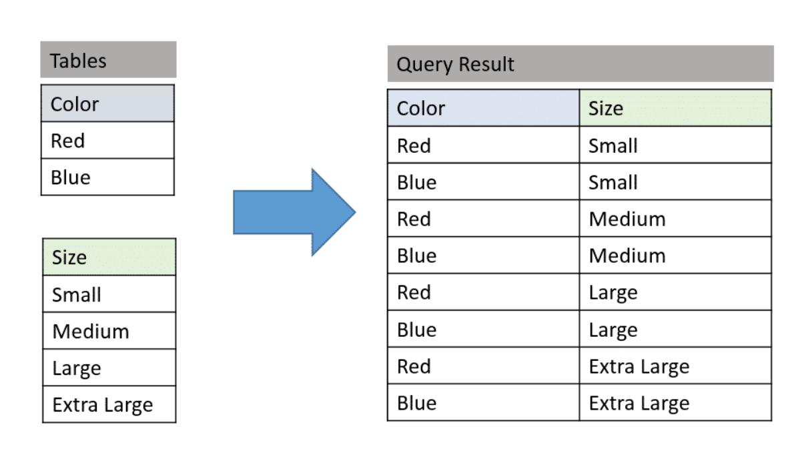
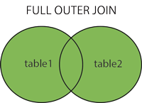
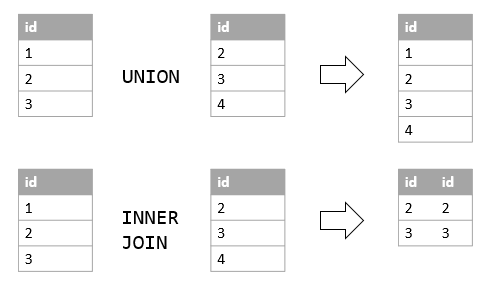
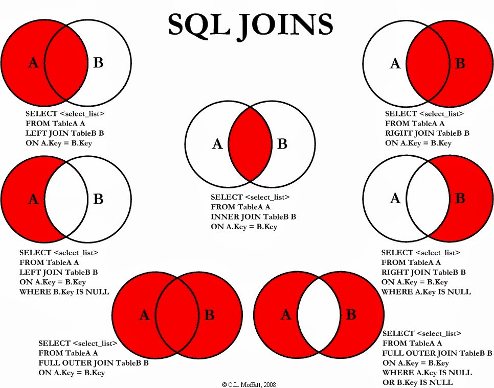
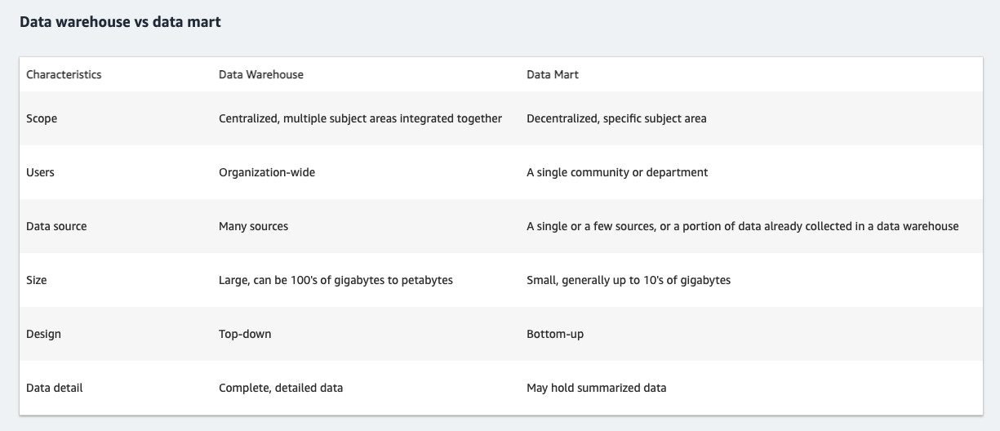
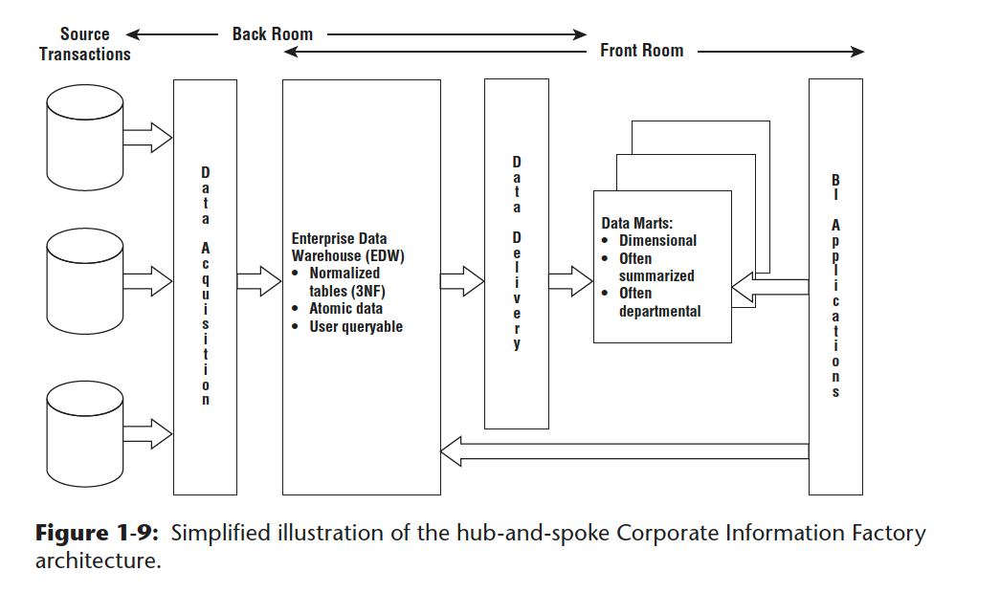

Faq Sql
Last updated: Feb 23, 2024Table of Contents
- 6. select list of integer from 1 -> 100 (recursive CTE)?
- 7. Given tables: movie, actor (multi to multi relations), please design a data model and query that can report number of actor with given movie-id/movie-name ?
- 8. Solve the “many-to-many” DB design problem?
- 9. Which op is faster union or union all?
- 9’. Difference between union and union all?
- 10. Example of use variable in SQL ?
- 11. Delete duplicate record from table ?
- 12. SQL deal with NULL value ?
- 13. When/how sub query ?
- 14. SQL join VS Sub-query ?
- 15. Explain/demo on window function in SQL ?
- 16. Count(*) VS Count(1) in SQL ?
- 17. Where VS Having in SQL ?
- 18. case when.. then.. else end CASE Expression in SQL ?
- 19. When to use right, left, inner, full outer join?
- 20. Aggregate function in SQL
- 21. Explain/demo on hierarchy select in SQL ?
- 22. DB model questions?
- 23. SQL recursive CTE
- 24. explain <> meaning ?
- 25. char VS varchar ?
- 26. lead VS load?
- 27. Explain foreign key (fk) ?
- 28. Explain difference between Data mart, data warehouse ?
- 29. Rank() example ?
- 30. EXISTS example ?
- 31. explain cross join ?
- 33. Left join example ?
- 34. where in multiple cols
- 35. The Best Medium-Hard Data Analyst SQL Interview Questions
- 36. SQL sort by desc and asc (on different columns)
SQL FAQ
1. Given 2 table a (3k rows), b (4k rows), what’s the
result count of select a.Color, b.Size from a cross join b ?
- 3k * 4k = 12k
- https://www.essentialsql.com/cross-join-introduction/
- http://www.sqlservertutorial.net/sql-server-basics/sql-server-cross-join/
- (cross join pic)

2. Difference between full outer Join And Union in SQL ?
-
Full outer Join: Joins two table, and gives the 1) Matched record + 2) Unmatched Record from Right table + 3) Unmatched Record from left table
- i.e. table A (a,b,c), table B (c,d).
-
Full outer join : return all columns in table A, table B (no depulicate)
- ->
select A*, B.* from A full outer join B on A.c = B.c
- ->
# output :
a | b | c1 | c2 | d
a1 b1 c11 c21 d1
a2 b2 c12 c22 d2
a3 b3 c13 c23 d3
.......

- Union : Consolidate the result of two queries and returns as single result set.
- i.e. table A (a,b,c), table B (c,d).
- ->
select A.a, A.b from A union select B.c, B.d from B
# output :
col1 | col2
a1 b1
a2 b2
c1 d2
c2 d2
..........

- In short :
- Full outer join : Join all
columns(No matter if table A, B has same columns ) - Union : Join all
rows(if table A, B has same columns) - Cross join :
Combinationsof all columns within table A and B
- Full outer join : Join all
- https://www.quora.com/What-is-the-difference-between-full-outer-join-and-union-in-SQL
- https://www.solutionfactory.in/posts/Difference-between-Join-And-Union-in-SQL
3. Find the orders in Quater ? (no hard-code)
-- postgre
SELECT extract(QUARTER
FROM order_timestamp) AS QUARTER,
count(*)
FROM orders
GROUP BY 1;
-- mysql
SELECT QUARTER(order_timestamp) AS QUARTER,
count(*)
FROM orders
GROUP BY 1;
4. Select value, and max value with conditions in one query?
-- postgre
SELECT commit_timestamp,
max(commit_timestamp) max_commit_time,
(SELECT max(commit_timestamp)
FROM git_commit
WHERE commit_timestamp >= '2019-01-01'
AND commit_timestamp <= '2019-12-31' ) AS max_commit_time_in_timeslot
FROM git_commit
GROUP BY 1
LIMIT 10 ;
5. Select data with value larger than average value?
-- postgre
-- V1
WITH user_commit_count AS
(SELECT user_id,
count(*) AS commit_count
FROM git_commit
GROUP BY 1),
avg_commit AS
(SELECT avg(commit_count)::int AS avg_commit_count
FROM user_commit_count)
SELECT user_id,
commit_count,
(SELECT *
FROM avg_commit)
FROM user_commit_count
WHERE commit_count >
(SELECT avg_commit_count
FROM avg_commit)
LIMIT 30;
6. select list of integer from 1 -> 100 (recursive CTE)?
-- postgre
WITH RECURSIVE my_num AS
(SELECT 1 AS seqnum
UNION ALL SELECT seqnum + 1
FROM my_num
WHERE seqnum < 100 )
SELECT seqnum
FROM my_num;
7. Given tables: movie, actor (multi to multi relations), please design a data model and query that can report number of actor with given movie-id/movie-name ?
8. Solve the “many-to-many” DB design problem?
9. Which op is faster union or union all?
union allis faster, since it WILL NOT avoid possible duplicates.
9’. Difference between union and union all?
Unionwill remove the duplicated records (only show same record once)Union allwill return everything, includes the duplicated data (merge directly)- https://dataschool.com/learn-sql/what-is-the-difference-between-union-and-union-all/
- http://sqlqna.blogspot.com/2013/08/union-union-all.html
10. Example of use variable in SQL ?
# mysql
SELECT
@x AS x,
@y AS y,
@x + 1 AS x_Plus_1,
@x := @x + 1 AS updated_x
FROM
(SELECT @x := 0, @y := 1) INIT;
11. Delete duplicate record from table ?
DELETE a
FROM TABLE a,
TABLE b
WHERE a.id = b.id
AND a.timestamp > b.timestamp
- Follow up : if in the “whole column duplicate” case?
-- build the table
CREATE TABLE IF NOT EXIST test( id int, age int);
TRUNCATE TABLE test;
INSERT INTO test VALUES (1,1);
INSERT INTO test VALUES (2,2);
INSERT INTO test VALUES (3,3);
INSERT INTO test VALUES (3,3);
INSERT INTO test VALUES (3,3);
INSERT INTO test VALUES (3,3);
SELECT * FROM test;
-- delete duplicated
-- V1
DELETE
FROM test
WHERE id IN
(SELECT id
FROM
(SELECT
id,
age,
ROW_NUMBER() OVER (PARTITION BY id ORDER BY id) AS order_
FROM test) sub
WHERE order_ > 2 )
-- delete duplicated
-- V2
DELETE FROM test
WHERE id IN (
SELECT calc_id FROM (
SELECT MAX(id) AS calc_id
FROM test
GROUP BY id, age
HAVING COUNT(id) > 1
) temp
);
12. SQL deal with NULL value ?
IS NULLVS= NULL
-- select data where SALARY is not null
SELECT ID, NAME, AGE, ADDRESS, SALARY
FROM CUSTOMERS
WHERE SALARY IS NOT NULL;
-- select data where SALARY is null
SELECT ID, NAME, AGE, ADDRESS, SALARY
FROM CUSTOMERS
WHERE SALARY IS NULL;
- COALESCE
-- COALESCE
SELECT StudentId, StudentName, Department,
Semester_I, Semester_II, Semester_III,
COALESCE(Semester_I, Semester_II, Semester_III, 0) AS COALESCE_Result
FROM StudentDetails
-- above SQL is as same as below
-- i.e. COALESCE(a, b, c, 0)
-- -> if a is not null then a
-- -> if b is not null then b
-- -> if c is not null then c
-- -> else 0
SELECT StudentId, StudentName, Department,
Semester_I, Semester_II, Semester_III,
COALESCE(Semester_I, Semester_II, Semester_III, 0) AS COALESCE_Result,
CASE
WHEN Semester_I IS NOT NULL THEN Semester_I
WHEN Semester_II IS NOT NULL THEN Semester_II
WHEN Semester_III IS NOT NULL THEN Semester_III
ELSE 0
END CASE_Result
FROM StudentDetails
- Addition value with Null
-- Method 1 : IFNULL
SELECT IFNULL(NULL, 0) + value;
-- Method 2 : COALESCE
SELECT COALESCE(NULL, value);
- Any Value + NULL = Any Value?
SELECT NULL + 100;
-- NULL
- Output of NULL != NULL, NULL = NULL ?
SELECT NULL != NULL;
-- NULL
SELECT NULL = NULL;
-- NULL
- https://www.codeproject.com/Articles/1017058/Handle-NULL-in-SQL-Server
- https://www.tutorialspoint.com/sql/sql-null-values.htm
13. When/how sub query ?
-
When
- A subquery is used to return data that will be used in the main query as a condition to further restrict the data to be retrieved.
- A subquery may occur in :
- A SELECT clause
- A FROM clause
- A WHERE clause
- The inner query executes first before its parent query so that the results of an inner query can be passed to the outer query.
-
How
-- sub-query pattern
SELECT column_name [, column_name ]
FROM table1 [, table2 ]
WHERE column_name OPERATOR
(SELECT column_name [, column_name ]
FROM table1 [, table2 ]
[WHERE])
- https://www.tutorialspoint.com/sql/sql-sub-queries.htm
- https://www.w3resource.com/sql/subqueries/understanding-sql-subqueries.php
- https://www.sqlservertutorial.net/sql-server-basics/sql-server-subquery/
14. SQL join VS Sub-query ?
-> By cases. (performance VS readable)
- https://www.quora.com/Which-is-faster-joins-or-subqueries
- https://stackoverflow.com/questions/2577174/join-vs-sub-query
- https://stackoverflow.com/questions/3856164/sql-joins-vs-sql-subqueries-performance
15. Explain/demo on window function in SQL ?
->
- A window function performs a calculation across a set of table rows that are somehow related to the current row
- Pattern
SELECT
aggre_func() OVER (PARTITION BY ... ORDER BY ...),
ROW_NUMBER() OVER (PARTITION BY ... ORDER BY ...),
RANK() OVER (PARTITION BY ... ORDER BY ...),
LAG(timestamp, 1) OVER (PARTITION BY ... ORDER BY ...) AS prev_record,
RANK() OVER (PARTITION BY timestamp, ORDER BY count(product_id)) AS rank # NOTE : rank can order by count
...
- Example
-- example 1
SELECT duration_seconds,
SUM(duration_seconds) OVER (ORDER BY start_time) AS running_total
FROM tutorial.dc_bikeshare_q1_2012
-- example 2
SELECT start_terminal,
duration_seconds,
SUM(duration_seconds) OVER
(PARTITION BY start_terminal ORDER BY start_time)
AS running_total
FROM tutorial.dc_bikeshare_q1_2012
WHERE start_time < '2012-01-08'
-- example 3
SELECT start_terminal,
duration_seconds,
SUM(duration_seconds) OVER
(PARTITION BY start_terminal) AS running_total,
COUNT(duration_seconds) OVER
(PARTITION BY start_terminal) AS running_count,
AVG(duration_seconds) OVER
(PARTITION BY start_terminal) AS running_avg
FROM tutorial.dc_bikeshare_q1_2012
WHERE start_time < '2012-01-08'
- ROW_NUMBER()
- ROW_NUMBER() does just what it sounds like—displays the number of a given row. It starts are 1 and numbers the rows according to the ORDER BY part of the window statement.
- Example
SELECT start_terminal,
start_time,
duration_seconds,
ROW_NUMBER() OVER (PARTITION BY start_terminal
ORDER BY start_time)
AS row_number
FROM tutorial.dc_bikeshare_q1_2012
WHERE start_time < '2012-01-08'
- RANK() and DENSE_RANK()
- RANK() : is slightly different from ROW_NUMBER(). If you order by start_time, for example, it might be the case that some terminals have rides with two identical start times. In this case, they are given the same rank, whereas ROW_NUMBER() gives them different numbers. In the following query, you notice the 4th and 5th observations for start_terminal 31000—they are both given a rank of 4, and the following result receives a rank of 6:
- RANK() would give the identical rows a rank of 2, then skip ranks 3 and 4, so the next result would be 5
- DENSE_RANK() would still give all the identical rows a rank of 2, but the following row would be 3—no ranks would be skipped.
- Example
SELECT start_terminal,
duration_seconds,
RANK() OVER (PARTITION BY start_terminal
ORDER BY start_time)
AS rank
FROM tutorial.dc_bikeshare_q1_2012
WHERE start_time < '2012-01-08'
- LAG and LEAD()
- You can use LAG or LEAD to create columns that pull values from other rows—all you need to do is enter which column to pull from and how many rows away you’d like to do the pull. LAG pulls from previous rows and LEAD pulls from following rows
- Example
-- example 1
SELECT start_terminal,
duration_seconds,
LAG(duration_seconds, 1) OVER
(PARTITION BY start_terminal ORDER BY duration_seconds) AS lag,
LEAD(duration_seconds, 1) OVER
(PARTITION BY start_terminal ORDER BY duration_seconds) AS lead
FROM tutorial.dc_bikeshare_q1_2012
WHERE start_time < '2012-01-08'
ORDER BY start_terminal, duration_seconds
-- example 2
SELECT start_terminal,
duration_seconds,
duration_seconds -LAG(duration_seconds, 1) OVER
(PARTITION BY start_terminal ORDER BY duration_seconds)
AS difference
FROM tutorial.dc_bikeshare_q1_2012
WHERE start_time < '2012-01-08'
ORDER BY start_terminal, duration_seconds
- NTILE()
- You can use window functions to identify what percentile (or quartile, or any other subdivision) a given row falls into. The syntax is NTILE(# of buckets). In this case, ORDER BY determines which column to use to determine the quartiles (or whatever number of 'tiles you specify)
- Example
SELECT start_terminal,
duration_seconds,
NTILE(4) OVER
(PARTITION BY start_terminal ORDER BY duration_seconds)
AS quartile,
NTILE(5) OVER
(PARTITION BY start_terminal ORDER BY duration_seconds)
AS quintile,
NTILE(100) OVER
(PARTITION BY start_terminal ORDER BY duration_seconds)
AS percentile
FROM tutorial.dc_bikeshare_q1_2012
WHERE start_time < '2012-01-08'
ORDER BY start_terminal, duration_seconds
- Can also define window function as alias (Defining a window alias)
- Example
SELECT start_terminal,
duration_seconds,
NTILE(4) OVER ntile_window AS quartile,
NTILE(5) OVER ntile_window AS quintile,
NTILE(100) OVER ntile_window AS percentile
FROM tutorial.dc_bikeshare_q1_2012
WHERE start_time < '2012-01-08'
WINDOW ntile_window AS
(PARTITION BY start_terminal ORDER BY duration_seconds)
ORDER BY start_terminal, duration_seconds
- https://mode.com/sql-tutorial/sql-window-functions/
- https://www.postgresql.org/docs/8.4/functions-window.html
16. Count(*) VS Count(1) in SQL ?
-
Difference
- count on
non nullCount(col)will only count theNon-Nullvalue in the col, neglect NULL. (# of value exist in col)
- count on
allCount(1)will count all value (include NULL) in the col anyway. NOT neglect NULL. (# of all record, include Null)- Count(
*) isSAMEas Count(1) (consider all columns in table). NOT neglect NULL
- count on
-
Performance
- If col is the primary key, count(col) faster than count(1)
- If col is NOT primary key, count(1) faster than count(col)
- If there is NO primary key, count(1) faster than count(col)
- If there is a primary key, count(col) is the fastest
-
Ref
-
example
-- build table
CREATE table if not exists user(id int, age int);
truncate table user;
INSERT INTO user values (1, 10);
INSERT INTO user values (1, 10);
INSERT INTO user values (1, 10);
INSERT INTO user values (1, 10);
INSERT INTO user values (1, 10);
INSERT INTO user values (NULL, 10);
INSERT INTO user values (1, NULL);
-- select
SELECT * FROM user;
-- mysql> SELECT * FROM user;
-- +------+------+
-- | id | age |
-- +------+------+
-- | 1 | 10 |
-- | 1 | 10 |
-- | 1 | 10 |
-- | 1 | 10 |
-- | 1 | 10 |
-- | NULL | 10 |
-- | 1 | NULL |
-- +------+------+
-- 7 rows in set (0.00 sec)
-- select
SELECT COUNT(id), COUNT(*) ,COUNT(1) FROM user;
-- mysql> SELECT COUNT(id), COUNT(*) ,COUNT(1) FROM user;
-- +-----------+----------+----------+
-- | COUNT(id) | COUNT(*) | COUNT(1) |
-- +-----------+----------+----------+
-- | 6 | 7 | 7 |
-- +-----------+----------+----------+
-- 1 row in set (0.00 sec)
17. Where VS Having in SQL ?
->
-
The
havingclause works on aggregated data -
Apart from SELECT queries, you can use WHERE clause with UPDATE and DELETE clause but HAVING clause can only be used with SELECT query.
-
WHEREclause is used for filtering rows and it applies on each and everyow, whileHAVINGclause is used to filtergroupsin SQL. -
One syntax level difference between WHERE and HAVING clause is that, former is used before GROUP BY clause, while later is used after GROUP BY clause.
-
When WHERE and HAVING clause are used together in a SELECT query with aggregate function, WHERE clause is applied first on individual rows and only rows which pass the condition is included for creating groups. Once group is created, HAVING clause is used to filter groups based upon condition specified.
-
Example
-- example 1
SELECT d.DEPT_NAME, count(e.EMP_NAME) as NUM_EMPLOYEE, avg(e.EMP_SALARY) as AVG_SALARY FROM Employee e,
Department d WHERE e.DEPT_ID=d.DEPT_ID AND EMP_SALARY > 5000 GROUP BY d.DEPT_NAME HAVING AVG_SALARY > 7000;
-- example 2
update DEPARTMENT set DEPT_NAME="NewSales" WHERE DEPT_ID=1 ;
- https://www.geeksforgeeks.org/having-vs-where-clause-in-sql/
- https://javarevisited.blogspot.com/2013/08/difference-between-where-vs-having-clause-SQL-databse-group-by-comparision.html
18. case when.. then.. else end CASE Expression in SQL ?
->
- Pattern
CASE expression
WHEN expression_1 THEN result_1
WHEN expression_2 THEN result_2
...
WHEN expression_n THEN result_n
[ ELSE else_result ]
END
- Example
SELECT
title,
rating,
CASE
WHEN (rating >= 1 AND rating < 2) THEN 'Not so good'
WHEN (rating >= 2 AND rating < 3) THEN 'Limited useful information'
WHEN (rating >= 3 AND rating < 4) THEN 'Good book, but nothing special'
WHEN (rating >= 4 AND rating < 5) THEN 'Incredbly special'
WHEN rating = 5 THEN 'Life changing. Must Read.'
ELSE
'No rating yet'
END AS comment
FROM
books
ORDER BY
title;
- https://www.db2tutorial.com/db2-basics/db2-case-expression/
- https://chartio.com/resources/tutorials/how-to-use-if-then-logic-in-sql-server/
19. When to use right, left, inner, full outer join?

-
OUTER join : extends that functionality and also include unmatched rows in the final result
-
LEFT outer : join includes unmatched rows from table written on the left of join predicate. On the other hand, RIGHT OUTER join
- LEFT outer join = INNER JOIN + unmatched rows from LEFT table
-
RIGHT outer : join includes unmatched rows from table written on the left of join predicate. On the other hand, RIGHT OUTER join
- RIGHT OUTER join = INNER JOIN + unmatched rows from the right-hand side table.
20. Aggregate function in SQL
->
1) Count()
2) Sum()
3) Avg()
4) Min()
5) Max()
SELECT COUNT()
SELECT Count(Distinct Salary)
SELECT Avg(salary) -- Sum(salary) / count(salary) = 310/5
SELECT Avg(Distinct salary) -- = sum(Distinct salary) / Count(Distinct Salary)
21. Explain/demo on hierarchy select in SQL ?
22. DB model questions?
- https://www.toptal.com/data-modeling/interview-questions
- https://mindmajix.com/data-modeling-interview-questions
- https://www.indeed.com/career-advice/interviewing/data-modeling-interview-questions
23. SQL recursive CTE
WITH recursive cte(columns_name)
AS (
initial_query
UNION ALL
recursive_query
)
SELECT *
FROM cte
24. explain <> meaning ?
# https://docs.microsoft.com/en-us/sql/t-sql/language-elements/not-equal-to-transact-sql-traditional?view=sql-server-ver15
# Not Equal To (Transact SQL)
# Compares two expressions (a comparison operator). When you compare nonnull expressions, the result is TRUE if the left operand is not equal to the right operand; otherwise, the result is FALSE. If either or both operands are NULL, see the topic SET ANSI_NULLS (Transact-SQL).
expression <> expression
25. char VS varchar ?
- https://stackoverflow.com/questions/1885630/whats-the-difference-between-varchar-and-char#:~:text=CHAR is fixed length and,to store the actual text.&text=The char is a fixed,variable-length character data type.
- CHAR is fixed length and VARCHAR is variable length. CHAR always uses the same amount of storage space per entry, while VARCHAR only uses the amount necessary to store the actual text.
- VARCHAR :
- stores variable-length character strings and is the most common string data type. It can require less storage space than fixed-length types, because it uses only as much space as it needs (i.e., less space is used to store shorter values). The exception is a MyISAM table created with ROW_FORMAT=FIXED, which uses a fixed amount of space on disk for each row and can thus waste space. VARCHAR helps performance because it saves space.
- CHAR :
- is fixed-length: MySQL always allocates enough space for the specified number of characters. When storing a CHAR value, MySQL removes any trailing spaces. (This was also true of VARCHAR in MySQL 4.1 and older versions—CHAR and VAR CHAR were logically identical and differed only in storage format.) Values are padded with spaces as needed for comparisons.
26. lead VS load?
- https://riptutorial.com/sql/example/27455/lag-and-lead
- The LEAD function provides data on rows after the current row in the row set. For example, in a SELECT statement, you can compare values in the current row with values in the following row.
- example :
# LC 1790 : Biggest Window Between Visits
WITH cte1 AS
(SELECT user_id,
coalesce(lead(visit_date) OVER (PARTITION BY user_id
ORDER BY visit_date), '2021-01-01') AS lead_visit_date,
visit_date
FROM UserVisits),
cte2 AS
(SELECT user_id,
max(datediff(lead_visit_date, visit_date)) AS max_diff
FROM cte1
GROUP BY user_id)
SELECT *
FROM cte2
ORDER BY user_id
27. Explain foreign key (fk) ?
- https://www.w3schools.com/sql/sql_foreignkey.asp
- https://www.cockroachlabs.com/docs/stable/foreign-key.html
- https://b-l-u-e-b-e-r-r-y.github.io/post/ForeignKey/
- aka
FOREIGN KEY Constraint - The FOREIGN KEY constraint is used to prevent actions that would destroy links between tables.
- The table with the foreign key is called the child table, and the table with the primary key is called the referenced or parent table.
- Any CRUD op will be constrainted by the fk constraint
- -> Prevent invalid op that break data Consistency within tables (with fk)
- -> i.e. we need to do the op on
ALL the tables with same fk constraintat once
28. Explain difference between Data mart, data warehouse ?


29. Rank() example ?
# LC 1831
WITH cte AS
(SELECT transaction_id,
RANK() OVER (PARTITION BY DATE(DAY)
ORDER BY amount DESC) AS rank
FROM transactions)
SELECT transaction_id
FROM cte
WHERE rank = 1
ORDER BY transaction_id
30. EXISTS example ?
# V1
SELECT * FROM table_a
WHERE EXISTS
(SELECT * FROM table_b WHERE table_b.id=table_a.id);
# is equal to below
# V2
SELECT * FROM table_a
WHERE id
in (SELECT id FROM table_b);
31. explain cross join ?
- https://www.fooish.com/sql/cross-join.html
- Cross join will return
ALL POSSIBLE COMBINATION OF ROWS IN GIVEN columns and tables - NOTE : below sql are eaual to each other
# sql 1
SELECT table_column1, table_column2...
FROM table_name1
CROSS JOIN table_name2;
# sql 2
SELECT table_column1, table_column2...
FROM table_name1, table_name2;
# sql 3
SELECT table_column1, table_column2...
FROM table_name1
JOIN table_name2;
33. Left join example ?
- Note : Should use
IS NULL(rather than “= null”)
# LC 0183
### NOTE :
# -> SHOULD BE o.CustomerId is NULL
# -> RATHER THAN o.CustomerId = NULL
SELECT
c.Name AS Customers
FROM
Customers c
left join
Orders o
on c.Id = o.CustomerId
WHERE
o.CustomerId is NULL -- note this condition
34. where in multiple cols
-- LC 184 Department Highest Salary
/* V0 */
SELECT d.name AS Department,
e.name AS Employee,
e.salary AS Salary
FROM Employee e
INNER JOIN Department d ON e.DepartmentId = d.Id
-- NOTE : below where has 2 columns !!!
WHERE (e.DepartmentId,
e.salary) in
(SELECT DepartmentId,
max(Salary) AS salary
FROM Employee GROUP
BY DepartmentId)
35. The Best Medium-Hard Data Analyst SQL Interview Questions
- https://quip.com/2gwZArKuWk7W
- Self-Join Practice Problems
- MoM (month over month)Percent Change : Find the month-over-month percentage change for monthly active users (MAU).
-- data
| user_id | date |
|---------|------------|
| 1 | 2018-07-01 |
| 234 | 2018-07-02 |
| 3 | 2018-07-02 |
| 1 | 2018-07-02 |
| ... | ... |
| 234 | 2018-10-04 |
WITH mau AS
(
SELECT
/*
* Typically, interviewers allow you to write psuedocode for date functions
* i.e. will NOT be checking if you have memorized date functions.
* Just explain what your function does as you whiteboard
*
* DATE_TRUNC() is available in Postgres, but other SQL date functions or
* combinations of date functions can give you a identical results
* See https://www.postgresql.org/docs/9.0/functions-datetime.html#FUNCTIONS-DATETIME-TRUNC
*/
DATE_TRUNC('month', date) month_timestamp,
COUNT(DISTINCT user_id) mau
FROM
logins
GROUP BY
DATE_TRUNC('month', date)
)
SELECT
/*
* You don't literally need to include the previous month in this SELECT statement.
*
* However, as mentioned in the "Tips" section of this guide, it can be helpful
* to at least sketch out self-joins to avoid getting confused which table
* represents the prior month vs current month, etc.
*/
a.month_timestamp previous_month,
a.mau previous_mau,
b.month_timestamp current_month,
b.mau current_mau,
ROUND(100.0*(b.mau - a.mau)/a.mau,2) AS percent_change
FROM
mau a
JOIN
/*
* Could also have done `ON b.month_timestamp = a.month_timestamp + interval '1 month'`
*/
mau b ON a.month_timestamp = b.month_timestamp - interval '1 month'
- Window Function Practice Problems
- Other Medium/Hard SQL Practice Problems
36. SQL sort by desc and asc (on different columns)
-- LC 580 Count Student Number in Departments
# V1
# https://www.datageekinme.com/general/leetcode/leetcode-sql-580-count-student-number-in-departments/
select
a.dept_name,
coalesce(count(student_id), 0) student_number
from
department a
left join
student b
on
(a.dept_id = b.dept_id)
group by a.dept_name
order by student_number desc, a.dept_name asc; --- NOTE this !!!